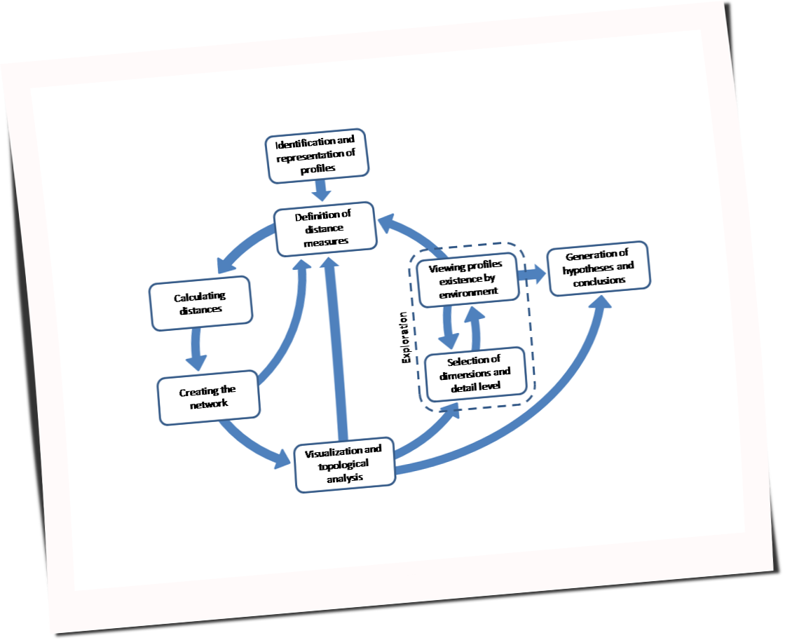

http://yatel.readthedocs.org
García, Mario Alejandro <malejandrogarcia@hotmail.com>; Cabral, Juan Bautista <jbc.develop@gmail.com>; Liberal, Rodrigo <rodrigo.inf.liberal@gmail.com>
Presenter Notes
Motivación, historia y contexto
El proyecto nace con la necesidad de estudiar la variabilidad genética de los individuos de una especie (en primera instancia el Mal de Río Cuarto virus) y los factores que influyen sobre ella. Mientras que variabilidad se puede calcular a partir de las diferencias que hay entre las características propias de cada individuo o de ciertos grupos; los factores que influyen sobre la variabilidad son, normalmente, el tiempo, la región geográfica y muchos elementos más que dependen de la especie que se analiza.
Yatel propone que para encontrar los factores más influyentes se aplique un enfoque de redes. La red se crea a partir de las diferencias o distancias entre los perfiles y luego se la explora multidimensionalmente para brindar al investigador una visión del problema imposible de lograr por otros medios.

Análisis multidimensional de redes
Cabe que aclarar que:
- Los nodos de la red conforman los diferentes individuos de la especie estudiada (llamados de ahora en más haplotipos o haplotypes por tradición en la herramienta heredada de su origen en la biología).
- Los arcos son las relaciones entre los haplotipos.
- El peso de los arcos es la diferencia entre los dos individuos.
- La ocurrencia de eventos se representa mediante hechos o facts presentes en la red. Los mismos son filtros que de activarse hace que los diferentes nodos se resalten demostrando una dimensión de la exploración.
El análisis realizado en Yatel se inspira en el modelo CRISP-DM para knowledge discovery in database (KDD). KDD, muchas veces llamado Minería de Datos aunque esta sea sólo una etapa, es un proceso que intenta encontrar información útil y novedosa (que pueda influir en la toma de decisiones) y que permanece oculta en una base de datos (Fayyad 1996).
Proceso de KDD
Features

Yatel se vé asi
La red se muestra todos sus Haplotipos (1) en tonos de gris y blanco cuando están inactivos y se colorean de verde cuando coinciden con algún ambiente.
Se puede limitar los arcos visibles a solo a un rango de pesos (2).
Se selecciona que atributos de los hechos constituirán cada ambiente y luego se seleccionan los valores con un combo (3).
Presenter Notes

Creador de ambientes para ánalisis multidimensional. Lista todos los atributos de todos las situaciones donde se encontraron los haplotipos.
Presenter Notes

Yatel permite crear sus redes en SQLite, MySQL y PostgreSQL
Presenter Notes

Además de poder conectarse a su propia base de datos, Yatel permite:
- Conectarse a instancias remotas de Yatel.
- Importar desde los formatos CSV, yyf (basado en YAML) y yjf (basado en JSON).
- Exportar a los formatos yyf y yjf.
Presenter Notes

Como Yatel construye sus redes sobre Bases de Datos Relacionales; en exploraciones avanzadas se puede acceder, desde su entorno gráfico, con SQL a los datos para generar un ambiente dinámico.
Presenter Notes

En caso de necesidad, Yatel incluye una consola ipython embebida que permite interactuar dinámicamente con todo Python
Presenter Notes
Desde Python
Se puede utilizar Yatel como librería
# Pensemos en una red exploratoria totalmente rara from yatel import dom # Super heroes haps = [dom.Haplotype("Batman", name="Bruce Wayne", debut=1939), dom.Haplotype("Alfred", name="Alfred Pennyworth", debut=1943), dom.Haplotype("Superman", name="Clark Joseph Kent", debut=1938), dom.Haplotype("Lex Luthor", name="Alexander Joseph Luthor")] # Creamos arcos entre amigos = 1 enemigos = 2 edges = [dom.Edge(1, "Batman", "Superman"), dom.Edge(1, "Batman", "Alfred"), dom.Edge(2, "Superman", "Lex Luthor")] # Agregamos hechos facts = [dom.Fact("Batman", job="Billonaire", family="Murdered"), dom.Fact("Batman", job="Super Hero", city="Gotham"), dom.Fact("Batman", job="Vigilante", created_by="Bob Kane"), dom.Fact("Alfred", job="Buttler", created_by="Bob Kane"), dom.Fact("Lex Luthor", job="Billonaire"), dom.Fact("Lex Luthor", job="Criminal Mastermind"), dom.Fact("Superman", job="Super Hero"), dom.Fact("Superman", created_by="Jerry Siegel"), dom.Fact("Superman", created_by="Joe Shuster"), dom.Fact("Superman", job="Reporter"), dom.Fact("Lex Luthor", created_by="Jerry Siegel"), dom.Fact("Lex Luthor", created_by="Joe Shuster")] # Validamos que la red sea consistente dom.validate(haps, facts, edges) # Persistimos la red en nuestra base de datos from yatel import db conn = db.YatelConnection("sqlite", "superheroes.db") conn.init_with_values(haps, facts, edges) # Personajes con trabajo de súper héroes list(conn.enviroment(job="Super Hero")) #OUT# [<Haplotype 'Batman' at 0x1cb1e90>, <Haplotype 'Superman' at 0x1cb1f90>] # Personajes con el trabajo de millonario list(conn.enviroment(job="Billonaire")) #OUT# [<Haplotype 'Batman' at 0x1caae50>, <Haplotype 'Lex Luthor' at 0x1cb1c90>] # Personajes creados por Bob Kane list(conn.enviroment(created_by="Bob Kane")) #OUT# [<Haplotype 'Batman' at 0x1cb80d0>, <Haplotype 'Alfred' at 0x1cb8150>] # Mostramos solos los edges que tienen pesos entre 0 y 1 list(conn.filter_edges(0,1)) #OUT# [<Edge '(u'Batman', u'Superman') 1.0' at 0x305ee90>, #OUT# <Edge '(u'Batman', u'Alfred') 1.0' at 0x305ee50>] # Podemos exportar nuestra red a json o yaml from yatel.conversors import yjf2yatel # yyf2yatel with open("bk.yjf", "w") as fp: yjf2yatel.dump(conn.iter_haplotypes(), conn.iter_facts(), conn.iter_edges(), conn.iter_versions(), fp) # escribe en el stream fp # o importar los elementos de la red para regenerarla with open("bk.yjf") as fp: haps, facts, edges, versions = yjf2yatel.load(fp)
Futuro
- Mejorar la interfaz de la yatel.db.YatelConnection para poder navegar la red via código.
- Implementar el algoritmo de Dijkstra.
- Terminar el manual y Tests.
- Mostrar estadísticas de la red.